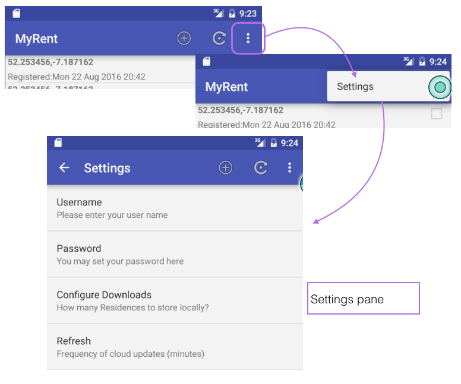
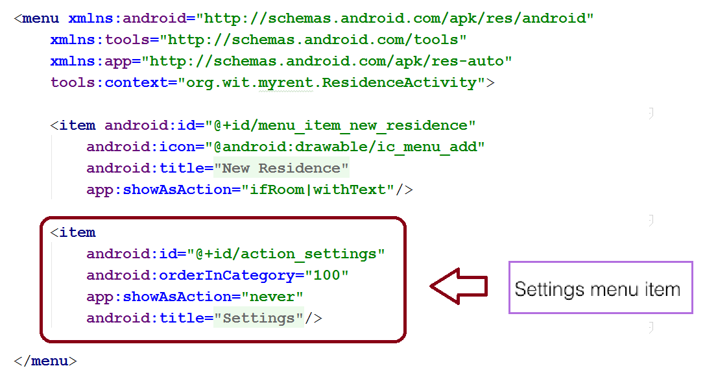
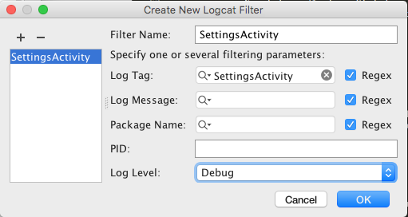
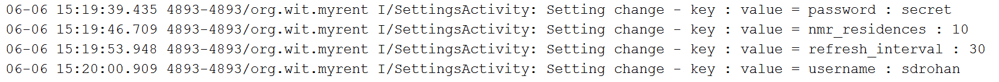

Settings allow a user to modify application features and behaviour. In this lab we demonstrate the use of settings to input a username, password pair, the size of the list of residences to download from the cloud and the frequency at which this list is automatically refreshed by a service or services. Services will be the subject of a future lab.
Create a new xml type folder in the resources directory ('res') called 'xml'.
Within this new directory, create a resource file called settings.xml with the following content:
<?xml version="1.0" encoding="utf-8"?>
<PreferenceScreen xmlns:android="http://schemas.android.com/apk/res/android" >
<EditTextPreference
android:key="username"
android:summary="@string/username_summary"
android:title="@string/username"/>
<EditTextPreference
android:key="password"
android:summary="@string/password_summary"
android:title="@string/password"
android:inputType="textPassword"/>
<EditTextPreference
android:key="nmr_residences"
android:summary="@string/nmr_residences_summary"
android:title="@string/nmr_residences"
android:inputType="text"/>
<EditTextPreference
android:key="refresh_interval"
android:summary="@string/set_refresh_interval_summary"
android:title="@string/set_refresh_interval"
android:inputType="text"/>
</PreferenceScreen>This layout references a number of strings - such as username, password and so on. Here is the additional content to be added to res/values/strings.xml to satisfy these references::
<string name="username_summary">Please enter your user name</string>
<string name="username">Username</string>
<string name="password_summary">You may set your password here</string>
<string name="password">Password</string>
<string name="nmr_residences">Configure Downloads</string>
<string name="nmr_residences_summary">How many Residences to store locally?</string>
<string name="set_refresh_interval">Refresh</string>
<string name="set_refresh_interval_summary">Frequency of cloud updates (minutes)</string>Next we shall introduce the settings activity-fragment pair that will be located in a new package org.wit.myrent.settings. You may create this package by placing a new package named settings in myrent.
Within this folder, create the SettingsActivity class:
package org.wit.myrent.settings;
import android.os.Bundle;
import android.support.v7.app.AppCompatActivity;
import android.view.Menu;
import org.wit.myrent.R;
public class SettingsActivity extends AppCompatActivity
{
@Override
protected void onCreate(Bundle savedInstanceState) {
super.onCreate(savedInstanceState);
if (savedInstanceState == null) {
SettingsFragment fragment = new SettingsFragment();
getFragmentManager().beginTransaction()
.add(android.R.id.content, fragment, fragment.getClass().getSimpleName())
.commit();
}
}
@Override
public boolean onCreateOptionsMenu(Menu menu) {
getMenuInflater().inflate(R.menu.residencelist, menu);
return true;
}
}Next create the skeleton of the associated fragment class: SettingsFragment.
package org.wit.myrent.settings;
import android.os.Bundle;
import android.preference.PreferenceFragment;
import org.wit.myrent.R;
public class SettingsFragment extends PreferenceFragment
{
@Override
public void onCreate(Bundle savedInstanceState) {
super.onCreate(savedInstanceState);
addPreferencesFromResource(R.xml.settings);
}
}Add a SharedPreference field and associated import:
import android.content.SharedPreferences; private SharedPreferences prefs;Override onStart and initialize the SharePreference field:
@Override
public void onStart()
{
super.onStart();
prefs = PreferenceManager
.getDefaultSharedPreferences(getActivity());
}Add the required import statement:
import android.preference.PreferenceManager;Add the following menu-handler code to onOptionsItemSelected(MenuItem item) in ResidenceListFragment:
case R.id.action_settings:
startActivity(new Intent(getActivity(), SettingsActivity.class));
return true;Import SettingsActivity:
import org.wit.myrent.settings.SettingsActivity;Add a new activity node to the manifest file:
<activity
android:name=".settings.SettingsActivity"
android:label="@string/settings" >
<meta-data
android:name="android.support.PARENT_ACTIVITY"
android:value=".activities.ResidenceListActivity"/>
</activity>Test by compiling and installing onto the emulator or device. Check that the settings menu can be displayed.
Here we shall implement the SharedPreferences.OnSharedPreferenceChangeListener interface:
public class SettingsFragment extends PreferenceFragment implements SharedPreferences.OnSharedPreferenceChangeListener
{
...
...
}Implement the interface's method:
@Override
public void onSharedPreferenceChanged(SharedPreferences sharedPreferences, String key) {
}Register the listener in onStart:
@Override
public void onStart()
{
super.onStart();
prefs = PreferenceManager.getDefaultSharedPreferences(getActivity());
prefs.registerOnSharedPreferenceChangeListener(this);
}Unregister the listener in onStop:
@Override
public void onStop()
{
super.onStop();
prefs.unregisterOnSharedPreferenceChangeListener(this);
}Enable up button in onCreate:
setHasOptionsMenu(true);Add the menu handler for the up button:
@Override
public boolean onOptionsItemSelected(MenuItem item)
{
switch (item.getItemId())
{
case android.R.id.home:
navigateUp(getActivity());
return true;
default:
return super.onOptionsItemSelected(item);
}
}These imports are required:
import android.view.MenuItem;
import org.wit.myrent.R;
import static org.wit.android.helpers.IntentHelper.navigateUp;On launching MyRent the user is presented with the residence list view and it is here we decide to facilitate access to settings. This is illustrated in Figure 1:

The default settings menu item has already been included as shown in Figure 2:

Add a log statement and associated import to SettingsFragment.onSharedPreferenceChanged method:
import static org.wit.android.helpers.LogHelpers.info; info(getActivity(), "Setting change - key : value = " + key + " : " + sharedPreferences.getString(key, ""));Create a logCat filter as shown in Figure 3.

Build and test by exercising this new menu option. It should be possible to display the settings pane as demonstrated in Figure 1.
Introduce a test value for each of the four items in the settings pane. The output in the logcat pane should include something similar to that shown in Figure 4.

The application at the end of this lab is available for reference here: myrent-10